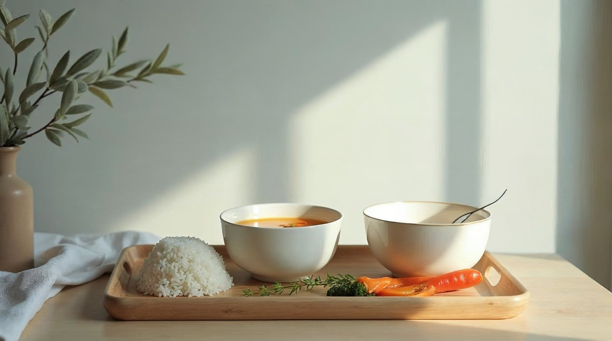
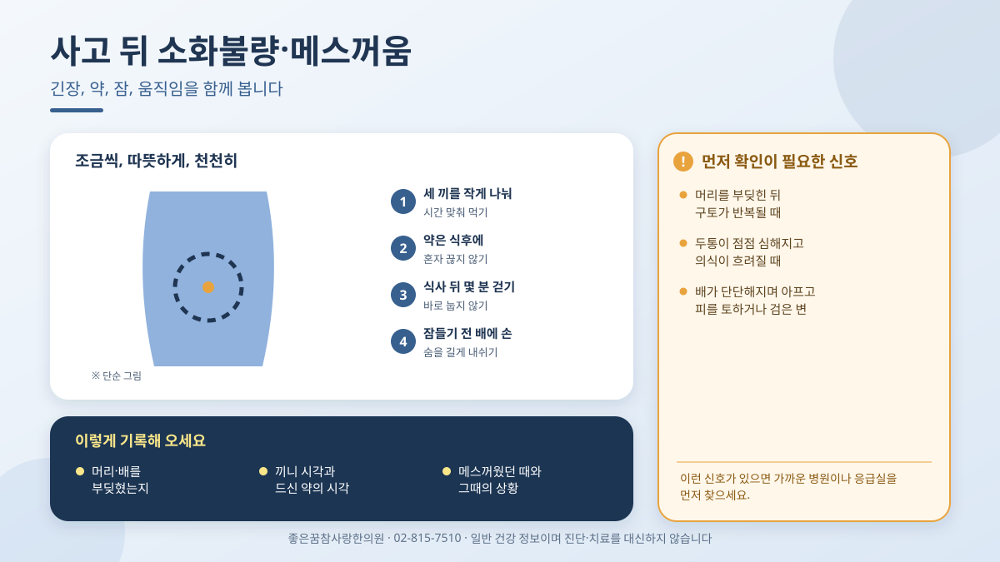

이종호 한의사 감수좋은꿈참사랑한의원 대표원장 (한의사 면허번호 19769)발행 2026-11-26 · 수정 2026-11-26
이 글의 차례
사고가 난 뒤 며칠째 밥상 앞에 앉아도 숟가락이 잘 가지 않습니다. 몇 숟가락 뜨고 나면 명치가 꽉 막힌 듯 답답하고, 속이 울렁거려 물만 마십니다. 목과 허리가 아픈 건 이해가 되는데, 왜 속까지 이런지 모르겠다고 하십니다.
진료실에서 교통사고로 오신 분들께 소화를 여쭤보면 생각보다 많은 분이 고개를 끄덕이십니다. 입맛이 없다, 조금만 먹어도 더부룩하다, 속이 메스껍다, 변이 시원치 않다. 아픈 곳이 아니라서 말하지 않았을 뿐, 사고 뒤 속이 편치 않은 분이 적지 않습니다.
몸은 큰 충격을 받으면 우선 버티는 쪽으로 힘을 모읍니다. 심장이 빨리 뛰고 근육이 긴장하는 동안, 위와 장의 움직임은 뒤로 미뤄지기 쉽습니다. 사고가 지나간 뒤에도 그 긴장이 며칠씩 이어지면 속은 계속 굳어 있게 됩니다.
이 글에서는 사고 뒤 소화가 왜 불편해질 수 있는지, 머리 충격이나 배의 충격과는 어떻게 구분해 살피는지, 약과 식사, 잠은 어떻게 챙기면 좋은지, 한의원에서는 무엇을 여쭙고 함께 살피는지 차례로 정리했습니다.
사고 뒤 소화 불편은 어떤 모습으로 나타나나요?
사고 뒤 소화 불편은 사람마다 모습이 다릅니다. 어떤 분은 입맛이 뚝 떨어지고, 어떤 분은 조금만 먹어도 명치가 꽉 막힌 듯합니다. 속이 울렁거리고 메스꺼운 분, 트림과 가스가 늘어난 분, 변비나 묽은 변이 생긴 분도 계십니다.
이런 불편은 사고 당일보다 하루 이틀 지나 뚜렷해지는 경우가 많습니다. 사고 직후에는 놀람 때문에 배고픔도 잘 느끼지 못하다가, 일상으로 돌아오면서 먹는 양이 들쭉날쭉해지고 속이 따라오지 못하는 모양새입니다.
목과 허리 통증이 심한 시기에 함께 나타나는 분도 많습니다. 아파서 잠을 설치고, 누워 지내는 시간이 늘고, 진통제를 드시기 시작하면서 속이 더 예민해집니다. 그래서 소화 불편만 따로 보지 않고 통증과 잠, 약을 함께 살핍니다.
왜 사고가 나면 속까지 불편해질까요
첫째는 긴장입니다. 우리 몸은 위험을 느끼면 싸우거나 피하는 쪽으로 준비를 하는데, 이때 위와 장의 움직임은 줄어듭니다. 사고 장면이 자꾸 떠오르거나 운전이 두려운 마음이 남아 있으면 이 긴장이 며칠씩 이어지고, 속도 계속 굳어 있게 됩니다.
둘째는 약입니다. 사고 뒤 통증 때문에 소염진통제를 드시는 분이 많은데, 이런 약은 사람에 따라 위를 자극해 속쓰림과 더부룩함을 일으킬 수 있습니다. 빈속에 드시거나 여러 병원에서 비슷한 약을 받아 겹쳐 드시면 부담이 더 커질 수 있습니다.
셋째는 움직임과 잠입니다. 아파서 누워 지내는 시간이 늘면 장의 움직임도 함께 줄어 변비와 가스가 생기기 쉽습니다. 잠이 얕고 자주 깨면 아침에 입맛이 없고, 끼니를 거르다 저녁에 몰아 먹는 흐름이 생기기도 합니다.
넷째는 목과 등의 긴장입니다. 등 가운데, 날개뼈 사이가 굳으면 명치 쪽이 답답하다고 느끼시는 분이 있습니다. 사고로 등이 굳은 분 가운데 속 답답함을 함께 말씀하시는 경우가 있어, 진료실에서는 등과 배를 함께 살핍니다.
비슷해 보여도 먼저 구분해서 보는 경우
사고 뒤 메스꺼움이 모두 소화의 문제는 아닙니다. 다음처럼 나눠 보면 무엇을 먼저 확인해야 하는지 정리가 됩니다.
- 머리를 부딪힌 뒤의 메스꺼움: 두통, 어지럼, 멍한 느낌과 함께 나타납니다. 병원에서 머리 상태를 먼저 확인합니다.
- 목에서 비롯된 어지럼과 메스꺼움: 고개를 돌리거나 젖힐 때 심해지고 목과 뒷머리가 뻐근합니다.
- 약과 관련된 속 불편: 진통제나 소염제를 드시기 시작한 뒤 속쓰림, 더부룩함이 생깁니다.
- 긴장과 잠에서 오는 소화 불편: 사고 장면이 떠오르거나 잠을 설친 날 더 심합니다.
- 배를 부딪히거나 벨트에 눌린 뒤의 통증: 배를 누르면 아프고 멍이 보일 수 있습니다. 병원 확인이 먼저입니다.
이 가운데 머리나 배를 부딪힌 경우라면 병원 검사를 먼저 받으신 뒤, 그 결과를 가지고 오시면 됩니다. 한의원 진료는 그 확인을 대신하는 것이 아니라 그다음 회복을 함께 살피는 자리입니다.
먼저 이렇게 여쭙니다
사고 뒤 속이 불편해 오시면 대략 이런 순서로 여쭙니다. 미리 한번 떠올려 오시면 이야기가 수월해집니다.
- 사고 때 머리나 배를 부딪혔나요? 안전벨트 자국이 남았나요?
- 속 불편은 사고 뒤 언제부터 시작됐나요?
- 입맛이 없나요, 먹으면 더부룩한가요, 메스꺼운가요?
- 지금 드시는 진통제, 소염제, 근육 이완제가 있나요? 식후에 드시나요?
- 잠은 몇 시간 주무시고, 밤에 몇 번 깨시나요?
- 대변은 며칠에 한 번, 어떤 모양인가요?
사고 전 소화 상태도 함께 여쭙니다. 원래 위가 예민한 편이셨는지, 스트레스를 받으면 속이 먼저 반응하는 편이셨는지 알면 지금의 불편을 이해하는 데 큰 도움이 됩니다.
최근 받으신 건강검진 결과지나 위내시경 결과가 있다면 함께 가져와 주세요. 사고 전 위 상태를 알 수 있는 자료가 있으면, 지금의 불편이 사고 뒤 새로 생긴 것인지 원래 있던 것이 커진 것인지 가늠하는 데 참고가 됩니다.
약을 드시는 동안 속을 지키는 법
병원에서 처방받은 진통제나 소염제는 처방대로 드시는 것이 원칙입니다. 다만 속이 불편하다면 약을 혼자 끊지 마시고, 처방한 병원에 속 불편을 알려 약을 조정할 수 있는지 상의해 보세요. 위를 보호하는 약을 함께 처방받는 경우도 있습니다.
여러 병원을 다니신다면 약 봉투를 한데 모아 겹치는 약이 없는지 확인해 보시길 권합니다. 약국에서 사신 감기약이나 진통제도 함께 적어 두세요. 같은 계열의 약을 겹쳐 드시면 속에 부담이 커질 수 있습니다.
약은 가능하면 빈속을 피하고 식사 뒤에 드시는 것이 속에 덜 부담됩니다. 입맛이 없어 끼니를 거르신다면 죽 몇 숟가락이나 바나나 한 개처럼 가볍게라도 먹은 뒤 약을 드세요.
일상에서 먼저 해 볼 수 있는 것
사고 뒤 속이 불편한 시기에는 위에 쉬는 시간을 주면서도 끼니를 거르지 않는 것이 중요합니다. 많이 드시기보다 조금씩, 따뜻하게, 천천히 드시는 것을 목표로 해 보세요.
- 하루 세 끼를 작게 나눠 시간 맞춰 먹기
- 죽, 진밥, 두부, 달걀, 흰살생선, 푹 익힌 채소처럼 부드러운 음식 고르기
- 기름진 음식, 매운 음식, 찬 음료, 술은 잠시 쉬기
- 식사 뒤 바로 눕지 말고 잠시 앉아 있거나 가볍게 걷기
- 물은 한꺼번에 많이보다 조금씩 자주 마시기
통증 때문에 많이 움직이기 어렵더라도 집 안에서라도 하루 몇 번 천천히 걸어 주세요. 몇 분만 걸어도 장이 움직이기 시작하고, 굳은 등과 허리도 함께 풀리는 느낌을 받는 분이 많습니다.
메스꺼움이 올라올 때는 창문을 열어 바람을 쐬고, 숨을 천천히 길게 내쉬어 보세요. 따뜻한 물이나 생강을 얇게 썰어 우린 물을 조금씩 마시는 것이 편하게 느껴지는 분도 있습니다.

일터로 돌아간 뒤의 식사
치료를 받으며 다시 출근하기 시작하면 식사가 가장 먼저 흔들립니다. 아침은 거르고, 점심은 급하게, 저녁은 늦게 몰아서 드시기 쉽습니다. 사고 뒤 예민해진 속에는 이런 흐름이 더 크게 부담이 됩니다.
아침에 입맛이 없다면 따뜻한 두유나 죽 한 컵, 바나나처럼 간단한 것이라도 드시고 나가세요. 점심은 국물에 말아 급히 넘기기보다 십오 분 이상 천천히 씹어 드시고, 저녁은 잠들기 세 시간 전에는 마치는 것을 목표로 해 보세요.
회식이나 술자리는 속이 편해질 때까지 잠시 미루시길 권합니다. 진통제를 드시는 기간에 술을 함께 드시면 위에 부담이 겹치고, 잠도 얕아져 다음 날 속이 더 무거워질 수 있습니다.
가족이 함께 도와줄 수 있는 것
사고를 겪은 분은 아픈 몸으로 보험 처리와 병원 일정까지 챙기느라 정작 끼니를 챙길 여유가 없습니다. 가족이 부드러운 반찬 한두 가지를 미리 만들어 두거나, 식사 시간을 함께 맞춰 주는 것만으로도 큰 힘이 됩니다.
"왜 이렇게 못 먹어" 하는 걱정 섞인 말보다 "조금만 같이 먹자"는 말이 훨씬 편하게 들립니다. 억지로 많이 먹게 하기보다 조금씩 자주, 편한 분위기에서 드실 수 있게 도와주세요. 식사 뒤 함께 집 앞을 몇 분 걷는 것도 좋습니다. 병원 일정과 약 시간을 가족이 함께 챙겨 주시면 마음의 짐도 한결 덜어집니다.
잠과 긴장을 함께 돌보기
사고 뒤 속의 불편은 마음의 긴장과 깊이 연결되어 있습니다. 사고 장면이 떠오르는 날, 보험사나 상대방과 통화한 날, 차를 다시 탄 날에 속이 유독 더 불편하다면 그 연결을 의심해 볼 수 있습니다.
잠들기 전에는 휴대폰을 내려놓고 배 위에 손을 얹은 채 숨을 길게 내쉬어 보세요. 배가 천천히 오르내리는 것을 느끼며 몇 분만 보내도 몸의 긴장이 한결 느슨해지는 분이 많습니다. 따뜻한 물주머니를 배에 올려 두셔도 좋습니다.
잠이 너무 얕아 낮까지 힘들다면 그 부분도 진료실에서 함께 말씀해 주세요. 잠이 조금 깊어지면 아침 입맛이 돌아오고, 식사 리듬이 잡히면서 속도 함께 편해지는 흐름을 보는 경우가 많습니다.
한의원에서 함께 살필 수 있는 경우
- 병원 검사에서 큰 이상은 없다고 들었지만 사고 뒤 입맛이 없고 더부룩한 경우
- 긴장하거나 사고 장면이 떠오를 때 속이 울렁거리는 경우
- 사고 뒤 변비나 묽은 변이 생겨 배가 불편한 경우
- 등과 날개뼈 사이가 굳으면서 명치가 답답한 경우
- 통증 치료를 받으면서 소화와 잠도 함께 살피고 싶은 경우
좋은꿈참사랑한의원에서는 진찰한 내용을 바탕으로 침과 온열 관리, 필요하면 등과 목의 긴장을 함께 보는 진료 가운데 지금 상태에 맞는 것을 정합니다. 통증과 소화, 잠 가운데 무엇을 먼저 살필지 순서도 함께 정합니다.
한약 상담이 필요한 경우에는 드시는 약을 모두 먼저 확인하고 신중하게 정합니다. 병원에서 처방받은 약은 처방대로 이어 가시고, 소화 불편이 길어지면 내과 진료를 나란히 받으시도록 안내해 드립니다.
자동차보험으로 진료를 받으실 수 있는지, 접수에 필요한 것이 무엇인지는 상황마다 다를 수 있습니다. 보험사 접수 번호를 메모해 두시고 한의원 접수 전 전화로 확인해 주세요.
이렇게 기록해 오시면 상담이 쉬워집니다
속의 불편은 무엇을 언제 먹었는지, 그날 잠과 마음이 어땠는지와 나란히 놓고 보면 흐름이 보입니다. 일주일 정도만 간단히 적어 오세요.
- 사고 날짜와 머리나 배를 부딪혔는지 여부
- 끼니 시각과 먹은 양, 불편했던 음식
- 드신 약의 이름과 시각, 식전인지 식후인지
- 잠든 시각과 깬 시각, 밤에 깬 횟수
- 메스꺼움이나 더부룩함이 심했던 때와 그때의 상황
빠진 날이 있어도 괜찮습니다. 몇 줄만 쌓여도 속이 불편했던 날과 약, 잠, 긴장 사이의 연결이 보이기 시작하고, 그것이 다음 걸음을 정하는 실마리가 됩니다.
속이 편해져야 회복도 힘을 얻습니다
사고 뒤 몸이 회복하려면 잘 먹고 잘 자는 것이 바탕이 됩니다. 속이 불편해 제대로 드시지 못하면 기운이 떨어지고, 통증도 더 오래 머무는 것처럼 느껴집니다. 그래서 저는 사고로 오신 분께 아픈 곳만큼 속과 잠을 꼭 여쭙니다.
이번 주에는 약은 식후에, 끼니는 작게 나눠, 식사 뒤 몇 분 걷기 가운데 하나만 골라 시작해 보세요. 기록과 함께 오시면 다음에 바꿀 것을 함께 정하겠습니다.
속이 불편하다는 말은 아프다는 말보다 꺼내기 어렵습니다. 사고와 상관없는 것 같아서, 괜히 유난스러워 보일까 봐 말씀을 아끼시는 분이 많습니다. 하지만 사고 뒤에 새로 생긴 불편이라면 작아 보여도 처음부터 함께 적어 두는 편이 좋습니다.
몸은 하나로 이어져 있습니다. 목과 허리의 긴장이 풀리면 속도 따라 편해지고, 속이 편해져 잘 먹고 잘 자면 통증도 덜 예민하게 느껴지는 경우가 많습니다. 그 연결을 함께 살피는 것이 사고 뒤 회복을 도울 때 제가 가장 중요하게 여기는 부분입니다.
이런 증상은 먼저 확인이 필요합니다
- 머리를 부딪힌 뒤 구토가 반복되거나 두통이 점점 심해지고 의식이 흐려지는 경우
- 배가 점점 단단해지며 심하게 아프거나 피를 토하거나 검은 변을 보는 경우
이런 신호가 있으면 한의원보다 가까운 병원이나 응급실을 먼저 찾으세요.
함께 읽으면 좋은 글
- 교통사고 뒤 어지럼, 메스꺼움, 불면은 어떻게 구분해서 살피나요?
- 교통사고 뒤 어지럼과 두통이 계속될 때는 어떤 점을 확인하나요?
- 사고나 큰 충격을 겪은 뒤 장면이 자꾸 떠오르고 잠이 깨는 외상 뒤 스트레스 반응은 어떻게 살피나요?
- 식사 뒤에 속이 더부룩한 것은 무엇 때문이고, 속쓰림과는 어떻게 다른가요?
- 소화가 오래 불편할 때 한의원에서는 무엇을 먼저 묻나요?

여쭙는 것
- 사고 때 머리나 배를 부딪혔나요? 안전벨트 자국이 남았나요?
- 속 불편은 사고 뒤 언제부터 시작됐나요?
- 입맛이 없나요, 먹으면 더부룩한가요, 메스꺼운가요?
생활에서 해 볼 것
- 하루 세 끼를 작게 나눠 시간 맞춰 먹기
- 죽, 진밥, 두부, 달걀, 흰살생선, 푹 익힌 채소처럼 부드러운 음식 고르기
- 기름진 음식, 매운 음식, 찬 음료, 술은 잠시 쉬기
한의원에서 함께 살필 것
- 병원 검사에서 큰 이상은 없다고 들었지만 사고 뒤 입맛이 없고 더부룩한 경우
- 긴장하거나 사고 장면이 떠오를 때 속이 울렁거리는 경우
- 사고 뒤 변비나 묽은 변이 생겨 배가 불편한 경우
먼저 확인이 필요한 신호
- 머리를 부딪힌 뒤 구토가 반복되거나 두통이 점점 심해지고 의식이 흐려지는 경우
- 배가 점점 단단해지며 심하게 아프거나 피를 토하거나 검은 변을 보는 경우
한눈에 보는 표
| 구분 | 핵심 |
|---|---|
| 여쭙는 것 | 사고 때 머리나 배를 부딪혔나요? 안전벨트 자국이 남았나요? 속 불편은 사고 뒤 언제부터 시작됐나요? |
| 생활에서 해 볼 것 | 하루 세 끼를 작게 나눠 시간 맞춰 먹기 죽, 진밥, 두부, 달걀, 흰살생선, 푹 익힌 채소처럼 부드러운 음식 고르기 |
| 한의원에서 함께 살필 것 | 병원 검사에서 큰 이상은 없다고 들었지만 사고 뒤 입맛이 없고 더부룩한 경우 긴장하거나 사고 장면이 떠오를 때 속이 울렁거리는 경우 |
| 먼저 확인이 필요한 신호 | 머리를 부딪힌 뒤 구토가 반복되거나 두통이 점점 심해지고 의식이 흐려지는 경우 배가 점점 단단해지며 심하게 아프거나 피를 토하거나 검은 변을 보는 경우 |
자주 묻는 질문
교통사고 뒤에 소화가 안 되는 것도 진료를 받을 수 있나요?
네, 사고 뒤 생긴 불편이라면 통증과 함께 말씀해 주세요. 사고 때 머리나 배를 부딪혔는지 먼저 확인하고, 통증과 잠, 드시는 약을 함께 살펴봅니다.
진통제 때문에 속이 불편한 것 같은데 약을 끊어도 되나요?
혼자 끊지 마시고 처방한 병원에 속 불편을 알려 상의해 주세요. 약을 조정하거나 위를 보호하는 약을 함께 쓰는 방법이 있을 수 있습니다.
입맛이 없으면 굶는 게 속에 편하지 않나요?
오래 굶으면 다음 끼니에 몰아 먹게 되고 약도 빈속에 드시게 되어 속이 더 불편할 수 있습니다. 적은 양이라도 시간을 맞춰 부드러운 음식을 드시는 편이 좋습니다.
사고 장면이 떠오를 때마다 속이 울렁거려요.
긴장과 소화는 가깝게 연결되어 있어 그런 경우가 있습니다. 잠과 마음의 상태를 함께 여쭙고, 필요하면 마음 건강을 함께 살필 수 있는 진료도 안내해 드립니다.
좋은꿈참사랑한의원은 재진 때 지난번 이야기부터 이어서 여쭙니다. 진료시간과 예약은 오시는 길에서 확인하세요.
어디서 상담받을 수 있나요?
좋은꿈참사랑한의원은 서울 동작구 만양로2길 2 신성빌딩 3층·5층(서울 동작구 상도동, 7호선 상도역 3번 출구 근처)에 있습니다. 한의사 3명(이종호 대표원장, 조영기 수석진료원장, 정원영 진료원장)이 진료합니다. 진료시간은 평일 09:30~20:00(점심 13:00~14:00), 토·일·공휴일 09:30~15:00이며, 방문 전 전화로 확인을 권합니다. 예약은 네이버 예약, 카카오톡 상담, 전화 02-815-7510로 받습니다.
이 글은 일반적인 건강 정보이며 개인의 진단이나 치료를 대신하지 않습니다. 증상이 있거나 복용 중인 약이 있다면 진료를 통해 확인하세요. 치료 효과는 개인마다 다를 수 있습니다.
작성 기준: 일반적으로 알려져 있는 건강 정보를 참고해 정리했습니다(대표원장 감수). 증상 기록은 1~2주 동안 하루 1회, 비슷한 시간에 적어 오시면 지난 상태와 비교하기 쉽습니다.